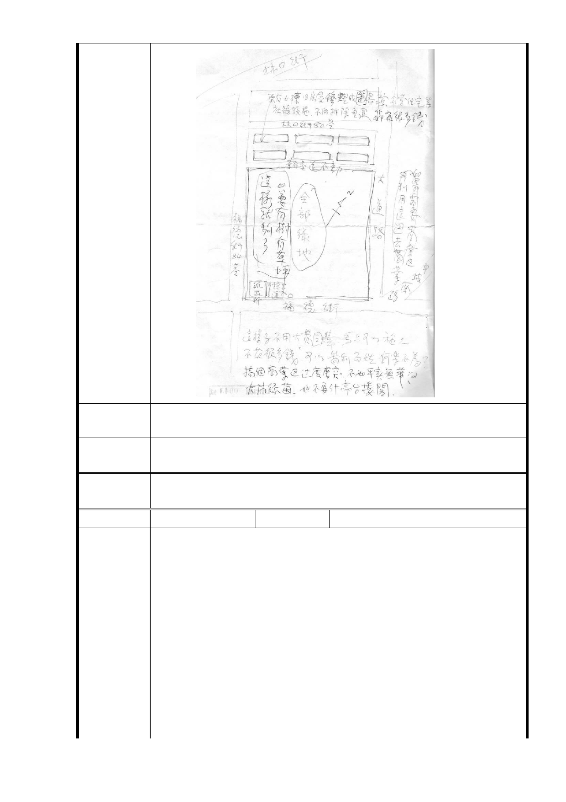

市 府 回 應 1.有關調整分區規劃部分，同編號1回復內容。
意 見 2.有關劃設商業區部分，同編號1回復內容。
專案小組
審查結論
同編號 1。
委
決
員
會
議
同編號 1。
編號
12
陳情人 信義區大道里林里長○昌
一、 未依考量「在地居民意見」以及粗製濫編的評估為「周邊
道路服務水準、停車需求、公共設施可負荷」，其內容與
事實均不符，故反對台北市政府將社福設施容積率為 210
％調高為 400 %。
由民國 95 年的「周邊公共設施服務水準不佳」，再行評估
後變成現況為「道路服務水準、停車需求、公共設施可負
陳情理由
荷」，事實上，周邊公共設施服務水準沒有一絲一毫改變
，台北市政府為配合公營住宅政策，就可以漠視原都市計
畫之願景及罔顧在地居民權益嗎？請執行單位將評估報
告書公開。
二、 在原有開發強度（容積率為 210％的前提下）在地居民意
見需求，鄰林口街八十巷（不含計畫道路寬度）即規劃綠
帶 20 公尺，另寬度必須足夠維持法律保障的日照權，以
- 44 -